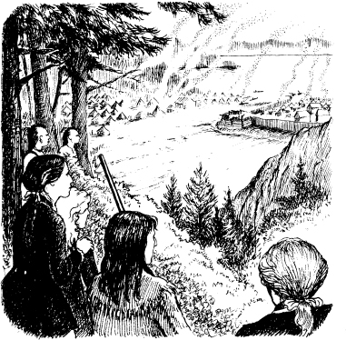
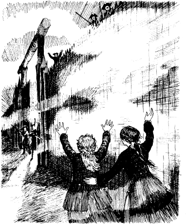

5
Đồn William Henry
Oắt-mắt chạy ra khỏi khu rừng. Chim Sáo và Nai Vàng đuổi theo. Một cuộc chiến diễn ra. Oắt-mắt, Nai Vàng và Duncan đã hạ bốn người Huron. Chim Sáo nhảy lên người Magua. Người đàn ông Mohican dùng dao đâm Magua. Magua ngã xuống đất.
Oắt-mắt và Duncan đi đến giúp hai người phụ nữ. Nhưng Magua vẫn chưa chết. Hắn đứng dậy bỏ chạy. Chim Sáo và Nai Vàng chạy theo hắn.
'Dừng lại!' Oắt-mắt hét lớn. 'Các người không thể bắt được hắn.'
'Oắt-mắt, làm thế nào anh tìm được chúng tôi?' Duncan hỏi.
'Chúng tôi đợi ở bờ sông,' Oắt-mắt trả lời. 'Chúng tôi thấy người Huron đưa các anh qua sông. Sau đó chúng tôi theo anh.'1
'Anh đã cứu sống tôi,' Duncan nói.
Oắt-mắt mỉm cười. 'Tôi tìm thấy súng của một người Huron,' anh ta nói. 'Bọn Huron thật ngu ngốc. Chúng để súng dưới gốc cây.'
Oắt-mắt quay lại gốc cây. Anh nhặt những khẩu súng khác. Anh tìm thấy khẩu súng dài của mình.
'Bây giờ chúng ta có súng và đạn,' anh ta nói. 'Chúng ta sẽ ở lại đây đêm nay. Ngày mai chúng ta sẽ đến Đồn William Henry.'

Sáng sớm hôm sau, Oắt-mắt đánh thức những người bạn của mình. Anh dẫn họ băng qua thung lũng và đi trên một con đường mòn xuyên qua khu rừng. Họ dừng lại gần một con sông nhỏ.
'Chúng ta sẽ đi dưới nước,' Oắt-mắt nói. 'Như vậy Magua sẽ không thấy dấu chân của chúng ta trên mặt đất.'
Họ đi bộ dưới nước trong một giờ. Sau đó, họ đến một số ngọn núi.
'Đi nhẹ nhàng thôi!' Oắt-mắt nói. 'Có lính Pháp ở đây.'
Họ đi lên đỉnh núi và nhìn xuống. Đó là Hồ Horican! Và đó là Đồn William Henry! Khói tỏa ra từ đám cháy trong rừng.

'Nhìn những đám cháy kia,' Oắt-mắt nói. Có rất nhiều Huron trong rừng. Chúng đang chiến đấu cho người Pháp.'
'Và nhìn về phía tây,' Duncan nói. 'Nhìn những chiếc lều đó. Đó là trại của Tướng Montcalm. Có hàng nghìn lính Pháp.'
Đột nhiên, họ nghe thấy tiếng súng.
'Người Pháp đang bắn vào Đồn William Henry,' Duncan nói. 'Nhưng chúng ta phải vào trong đồn.'
'Chúng ta may mắn đấy,' Oắt-mắt nói. 'Có một màn sương mù dày đặc đang lan đến thung lũng. Sương mù sẽ che giấu chúng ta khỏi người Pháp. Các vị hãy theo tôi!'
Oắt-mắt và những người Mohican bắt đầu đi xuống núi. Duncan và hai chị em đi theo họ. Ở chân núi, sương mù rất dày.
'Hãy cẩn thận!' Oắt-mắt nói. 'Có rất nhiều lính Pháp dọc theo con đường này. Hãy đi nhẹ nhàng!'
Họ đi theo anh ta qua làn sương mù. Đột nhiên, họ nghe thấy tiếng nói.
'Ai ở đó?' một người lính nói bằng tiếng Pháp.
Duncan trả lời bằng tiếng Pháp. 'Một người bạn của nước Pháp!' anh ta nói.
'Các ngươi là ai?' người Pháp hét lớn.
Nhưng Duncan và những người bạn của anh đã nhanh chóng bỏ đi. Họ tiếp tục đi qua màn sương mù. Cuối cùng, họ đến bức tường của tòa thành.
Một giọng nói của người Anh hét lớn từ trên đỉnh tường. 'Người Pháp đến rồi. Bắn! Bắn!'
'Cha ơi, cha ơi!' Alice hét lớn. 'Là con đây! Hãy cứu những đứa con gái của cha!'
'Đừng bắn, mọi người!' giọng nói của Tướng Munro cất lên. 'Con gái tôi ở đây! Mở cổng ra!'
Cổng thành mở ra. Những người lính đi ra khỏi tòa thành. Họ đưa mọi người vào trong tòa thành - Duncan, những người phụ nữ trẻ, Oắt-mắt và những người Mohican.
Nhưng mọi người trong Đồn William Henry đều gặp nguy hiểm.

Mục lục
- Bìa
- Tựa đề
- Mục lục
- Ghi chú về Tác giả
- Ghi chú về Câu chuyện
- Những nhân vật trong câu chuyện
- 1 Hai chị em
- 2 Lạc trong rừng
- 3 Cuộc chiến tại Glenn’s Falls
- 4 ‘Ta là Tù trưởng Huron’
- 5 Đồn William Henry
- 6 ‘Khi nào viện binh mới đến’
- 7 Đường mòn
- 8 Thầy thuốc
- 9 Trong làng Huron
- 10 Con gấu
- 11 Tù trưởng già
- 12 Người Mohican cuối cùng
- Bản quyền